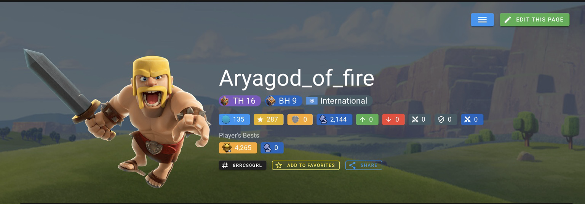

Clash of Clans
IGN: Aryagod_of_fire | Tag: 8RRC80GRL
TH16 / BH9 player in an international clan. My peak rank was Titan League (4265 trophies).

Image: Clash of Clans profile screenshot from Supercell / Clash of Stats (source). Used for educational purposes.